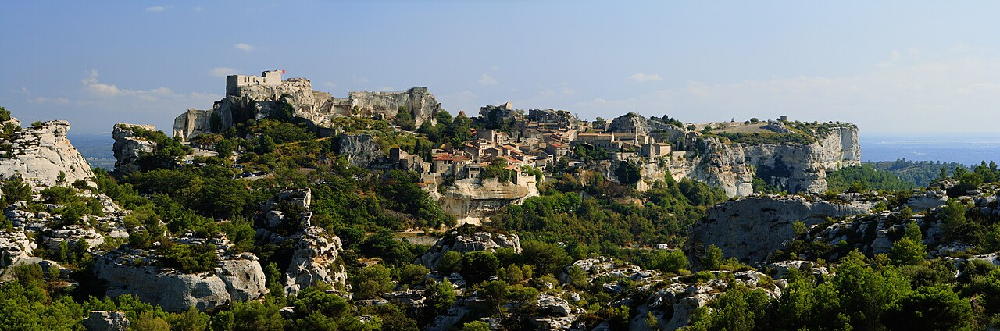
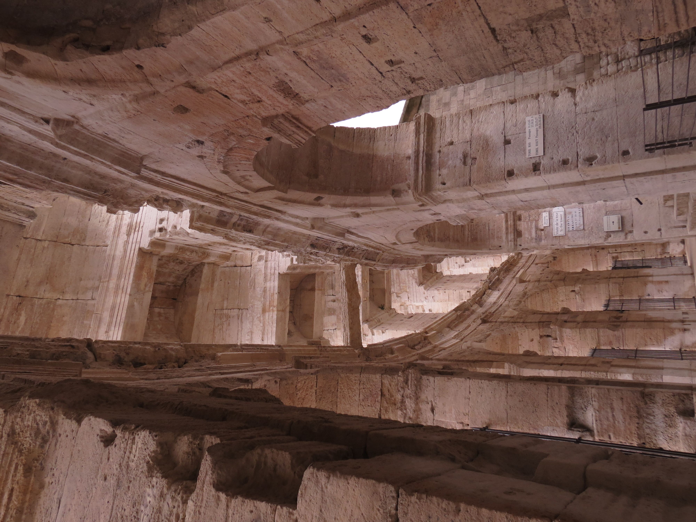
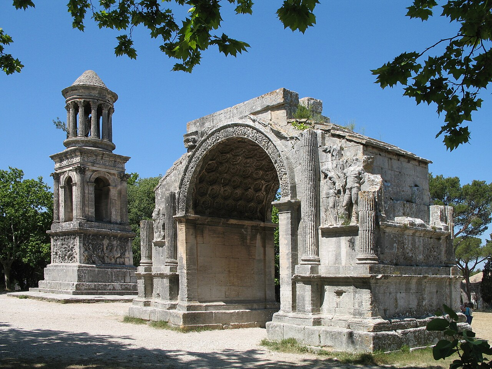

The constraint that changes everything
The Walk-to-Dinner Rule
L'Oustau de Baumanière has held three Michelin stars since January 2020[2] under chef Glenn Viel, and it sits in a private vallon at the foot of the limestone cliffs — not in a town, not on a square, not next to a taxi rank. The Val d'Enfer road curves past it in the dark after a 3-hour tasting menu. The constraint is therefore structural: if you are drinking the paired wines, you are either sleeping on the estate or within stumbling distance of it.
The restaurant occupies the same domain as its hotel.[1] When the estate holds your room key, the post-dinner walk is 60 seconds across cobblestone. Every other option involves a calculation.
The medieval village of Les Baux sits 20–25 minutes on foot above the restaurant — uphill on the return, in darkness, after dessert and cheese. Two properties make that walk honest: La Riboto de Taven, a three-room troglodyte B&B in the same valley,[7] and Hostellerie de la Reine-Jeanne, four rooms above a restaurant at the village gate.[8] For everyone else, a five-minute taxi is the honest answer.
This issue works outward from that fact: where to sleep, what to do in the 30 km radius, and the seasonal gotchas that can close the restaurant, the trails, or the roads before you arrive.
"The only zero-walk option is the estate itself — the 3★ restaurant and the 53 rooms share an address."Walking-distance lodging report
Lodging
Where to Rest Your Head
Walk to the table (< 15 min on foot)Baumanière [1]
53 rooms across five buildings; the restaurant is a door away. From €325. TA 4.3/5.[6]
La Riboto de Taven [7]
Two rooms carved into rock in the same Vallon de la Fontaine. Former Michelin-starred restaurant. TA 4.9/5 — highest-rated property in Les Baux. Book months ahead.
Le Mas d'Aigret [9]
17th-c farmhouse partly carved into rock, east side of village. Cross the village then descend into the Val d'Enfer — return is uphill. TA 4.6/5.[10] €125–€385.
Hostellerie de la Reine-Jeanne [8]
Budget pick at 4 Rue Porte Mages, inside the village. Panoramic terrace. No A/C; rooms above restaurant. TA 4.0/5. Descend to L'Oustau, uphill return.
Le Hameau des Baux [15]
Le Paradou — a Provençal hamlet built as a set piece: square, chapel, fountain. Near the Cornille olive cooperative in Maussane.
Hôtel de Tourrel [16]
17th-c palais in central Saint-Rémy, converted by architects. La Table de Tourrel holds one Michelin star[17] — a Friday-night option that makes the weekend two starred meals.
Domaine de Manville [13]
18-hole eco-certified golf course; L'Aupiho (Lieven Van Aken) holds one Michelin star.[14] TA 4.6/5. From ~€310.
Château des Alpilles [18]
19th-c manor in a 7-hectare park, Saint-Rémy. Individually decorated rooms; Michelin Guide listed. Grounds include a pool and tennis court.
⚠ Skip: Hôtel Benvengudo[11] — beautiful 4-star mas at 1.4 km on Route d'Arles, but the D78F has no pedestrian footpath. Guests are explicit: "not walkable without a car."[12] Mas de l'Oulivié[19] is closed through 26 March 2026.[33]
The days
Friday · Saturday · Sunday
Day one
Friday: Arrive & Explore
Afternoon
200 m from Baumanière on foot. 2026 show: Picasso, l'art en mouvement — 40 min, 450+ projected works. €16.50.[37]
Late afternoon
~10 min from Carrières. Medieval fortress with the largest collection of full-scale siege engines in Europe. Live trebuchet firing at 11:00, 15:30, 17:30.
Evening
AOP Biodynamic Wine
The Les Baux-de-Provence AOP requires 100% organic viticulture since the 2023 vintage.[30] A cellar visit pairs with Friday-night dinner at a character hotel.
Day two — the anchor
Saturday: Arles & The Table
08:00–12:45
Boulevard des Lices, ~450 vendors, 2 km — one of the largest markets in Provence. Drive 30 min or take a taxi.
Afternoon
LUMA Arles + Roman Arles [23]
Gehry tower, Carsten Höller slides, and park all free. Combine with the Arènes (c. 90 AD, €11[25]) and Fondation Van Gogh[24] reopens 22 May 2026.
19:30 / 20:00
★★★ L'Oustau de Baumanière
The anchor. ~3 hours. Walk back to your room after. This is why everything else is arranged around Saturday.
Day three
Sunday: Saint-Rémy or the Hills
Morning
Van Gogh's asylum, 12 km from Les Baux. In 53 weeks here he painted 143 oils including The Starry Night. Working hospital — visitors see the cloister, chapel, and reconstructed bedroom. €10.
Midday
Glanum + Les Antiques
Greco-Roman city 1 km south (€9 + €3 audio). The Mausoleum of the Julii and France's oldest triumphal arch stand free on an esplanade outside.

Arles in depth
Eight UNESCO sites & a Gehry tower
Arles has the densest Roman remains in France after Rome itself. Eight monuments are UNESCO-listed (1981).[25] The Arènes (c. 90 AD, ~21,000 seats) still hosts bullfights and concerts. The Pass Liberté (€13–15) covers any four monument entries plus a Fondation Van Gogh reduction.
From 6 July–4 October 2026, Les Rencontres d'Arles — the world's largest photography festival — takes over heritage venues citywide. Either time it deliberately or prepare for dense crowds.
Arènes: €11, daily 9–19 May–Sep · LUMA free zone: open daily · Fondation VvG reopens: 22 May 2026

Saint-Rémy-de-Provence — 12 km / 20 min
Van Gogh, Glanum & the Wednesday Market
The cloister of Saint-Paul-de-Mausole[22] is the reason Saint-Rémy is on a painter's itinerary: Van Gogh voluntarily admitted himself here on 8 May 1889, and in 53 weeks produced 143 oil paintings. The site is still a working psychiatric institution; visitors see the Romanesque cloister and a reconstructed bedroom.
On Wednesdays, the Provençal market[27] (8:00–13:00) sprawls through the historic centre — herbs, olives, oils, honey, lavender. A smaller Saturday repeat runs the same hours.
Saint-Paul-de-Mausole: €10, from 1 Apr 9:30–19:00 · Glanum: €9 + €3 audio · Les Antiques: free, 24/7
The anchor event
The Table
Three Michelin stars since 2020. Glenn Viel. Saturday evening. Everything else in the weekend orbits this reservation.
Stars
★★★ Michelin (since Jan 2020)
Chef
Glenn Viel
Meal duration
~3 hours (tasting menu)
Hotel rooms
€325 – €1,500 · 53 rooms
Field notes
Three Hazards, One Calendar
Each of these can cancel a different piece of the weekend. Check all three before booking.
Winter Closure
L'Oustau closes roughly 26 Jan – 6 Mar each year.[5] In the same window: Hôtel de Tourrel opens mid-March,[34] Mas de l'Oulivié shut through 26 March 2026.[33] Winter weekends collapse the lodging menu to Baumanière, Manville, Hameau or Château des Alpilles.
Summer Fire Ban
From 1 June onward, the Bouches-du-Rhône prefecture closes the Alpilles massif by daily 18:00 decree for fire risk.[28] Any Sunday hike — Mont Gaussier, Val d'Enfer, Plateau de la Caume — is a check-the-map-the-night-before plan, not a booking.
The Mistral
50 km/h average, gusting to 100 km/h, typically multi-day.[29] It is the off-switch on ridge walks at any time of year — and it is not forecastable more than 48 hours out. Hikes planned in advance must have an indoor alternative ready.
Before you book
Booking Facts
L'Oustau de Baumanière — Restaurant
Book weeks to months ahead. Call the estate directly (baumaniere.com/en/infos-contact) — do not rely on third-party booking platforms for a 3★ table. Confirm whether a simultaneous room reservation affects table priority.
L'Oustau de Baumanière — Hotel
53 rooms, €325–€1,500. Same operator as the restaurant. baumaniere.com/en/accommodation. Hotel closes 25 Jan – 5 Feb 2026 (restaurant closure slightly longer: 26 Jan – 6 Mar).
La Riboto de Taven
3 rooms only — book months in advance. Verify current availability directly with the owners (the TripAdvisor listing notes historic retirement rumours but remains active).[7]
Taxi logistics
Les Baux ↔ Saint-Rémy: ~11 min, €30–€48 average.[31] Pre-arrange a return taxi for the dinner night if not sleeping at Baumanière or in the immediate valley — there is no taxi rank at L'Oustau.